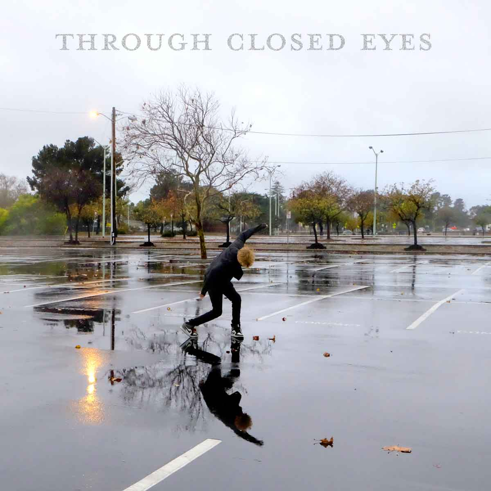

WILLEM
Making sense of the chaos
Through Closed Eyes
WILLEM's debut single describes the grieving of lost friends and family. Putting a modern twist on 80's drums and synths the song lulls us into a peaceful yet unforgettable groove. As the world around us falls apart we find ourselves dancing in the rain. For a moment it feels like everything might just turn out okay
Through Closed Eyes Music Video

Discography
Days Without Consequence
The first project that WILLEM takes us through his highschool years. It details the adventures he had throughout San Francisco and his hometown of Oakland. Trying to escape his demons through drugs, girls and music.
Dilute My Vision
After Days Without Consequence. WILLEM takes year to experiment and develop new sounds. The Songs in the Dilute My Vision playlist exemplify this and give a hint of the genre-blending artist that he later develops into. The songs range in inspiration from Prince to Mac Demarco. The songs take a break from WILLEM's previously paniful lyrics and show a more passionate and cheerful side of his personality.
Petroglyphs
Continuing his experimentation with indie rock, WILLEM writes existential lyrics about the state of the world and its affect on his relationships. The third track Internal Dialect is WILLEM showing his strengths as a musician and composer through writing a gentle yet creepy jazz balad.